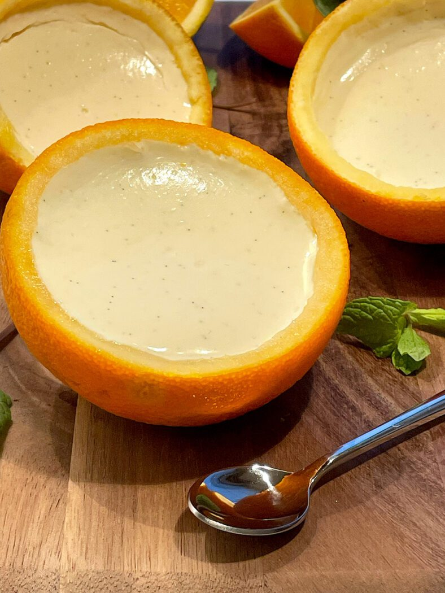

Orange Posset

Ingredients
- 75g sugar (1/3 cup)
- 5g orange zest (1/2 tbsp) (1 orange)
- 200ml heavy cream (1 cup)
- 30g orange juice (2 tbsp) (1/2 orange)
- 10g lemon juice (1 tsp) (1/4 lemon)
- 5g vanilla powder (1 tsp)
- 2 orange shells (to serve)
Instructions
- Grate the zest of 1 orange.
- Mix lemon zest and Sugar.
- Add cream.
- Stir until it boils over medium heat.
- Remove the boiling mixture from the stove.
- Add orange and lemon juive and vanilla and mix.
- Strain the mixture thropugh a sieve and pour into the emptied oranges.
- Chill in the refregerator for at least 3 hours
- Ready to serve. Enjoy your meal.